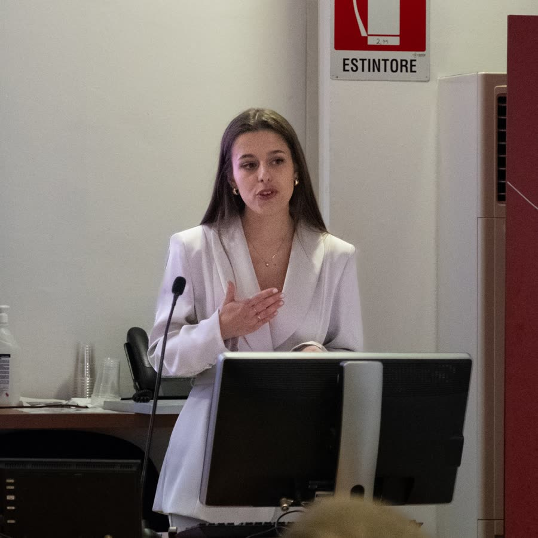
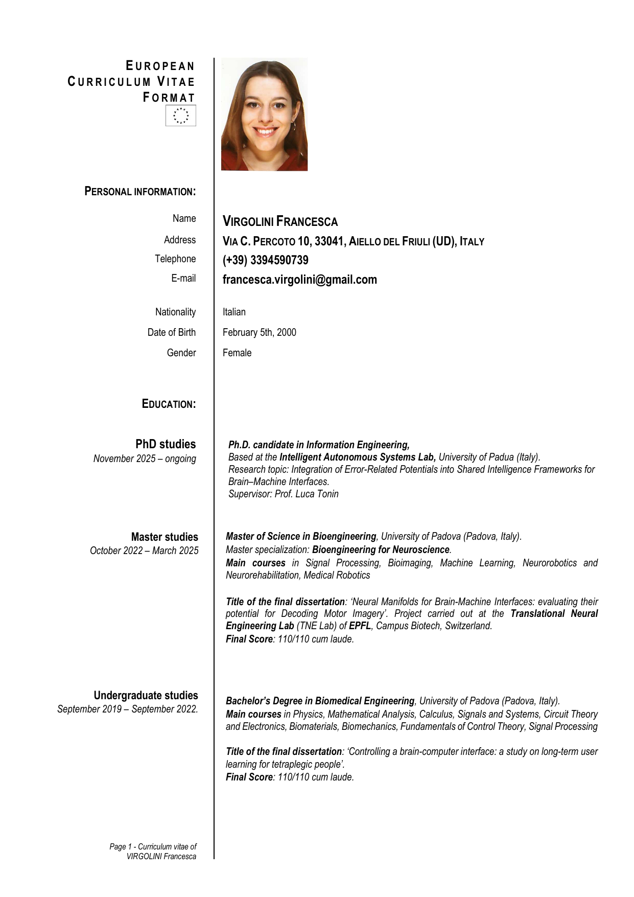

PhD Focus
Integration of Error-Related Potentials into Shared Intelligence Frameworks for Brain-Machine Interfaces, supervised by Prof. Luca Tonin.
PhD Candidate · Bioengineering · Brain-Machine Interfaces
I build bridges between neural data, machine learning, and assistive robotics to make brain-machine interfaces more adaptive, interpretable, and useful in real human contexts.


Research
Integration of Error-Related Potentials into Shared Intelligence Frameworks for Brain-Machine Interfaces, supervised by Prof. Luca Tonin.
Neural Manifolds for Brain-Machine Interfaces: evaluating their potential for decoding motor imagery. Project carried out at EPFL's Translational Neural Engineering Lab.
Controlling a brain-computer interface: a study on long-term user learning for tetraplegic people.
For hirers and collaborators
I combine biomedical signal processing, machine learning, and robotics software with teaching experience and an international lab background.
Designing analysis workflows for EEG and biomedical data, from preprocessing to feature extraction, modelling, and evaluation.
Bringing shared autonomy, ROS-based systems, and human feedback into experimental robotic interfaces.
Turning complex ideas into usable explanations, teaching support, reproducible code, and collaboration-ready documentation.
Education
University of Padua, based at the Intelligent Autonomous Systems Lab.
University of Padova, Bioengineering for Neuroscience specialization. Final score: 110/110 cum laude.
University of Padova. Final score: 110/110 cum laude.
Scientific high-school diploma in Udine. Final examination score: 100/100.
Experience
Laboratory experience at Campus Biotech, Geneva, Switzerland.
Laboratory experience in Padua, Italy.
Supported undergraduate students with Python exercises, syntax, debugging, and problem-solving approaches.
Mathematics, Physics, Programming, and English for high-school and university students.
Toolkit
Transcript of records
Courses are listed from the Bachelor and Master transcript records. Descriptions are concise public-facing summaries, ordered from the most recent exam to the first one, with links to official University of Padua course catalogue searches where available.
Contact
I am happy to hear from researchers, students, and collaborators working at the intersection of neural engineering, machine learning, and assistive robotics.